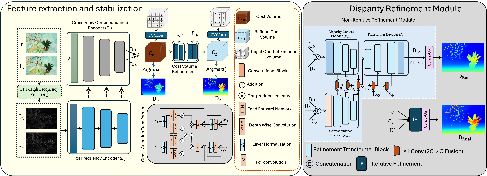
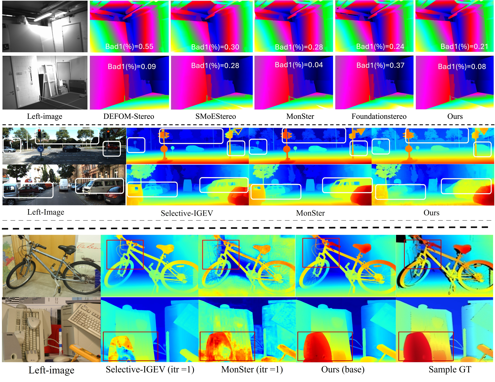

Lightweight
A compact 3.36M-parameter model built for practical stereo inference.
Despite rapid progress in learning-based stereo matching, high accuracy is often achieved at the cost of heavy backbones and computationally intensive 3D cost volume processing, resulting in substantial memory and runtime overhead. More critically, these methods frequently struggle to generalize across domains, limiting their practical deployment. We present LiteMatch, a lightweight stereo matching framework that achieves strong zero-shot generalization through cost volume stabilization-without expensive 3D convolutions. LiteMatch employs two complementary encoders: a Cross-View Correspondence Encoder (CVCE) to capture global cross-view interactions, and a High-Frequency Encoder (HFE) that enhances fine structural details via FFT-based frequency cues. To stabilize the cost volume, we introduce the Cost Volume Consistency Loss (CVC-Loss), a voxel-wise binary cross-entropy objective applied to softmax-normalized cost distributions. By encouraging sharp and unimodal disparity probabilities, CVC-Loss promotes stable cost distributions and enables rapid convergence. A lightweight refinement module further produces sharp full-resolution disparities with low-iteration updates, avoiding heavy recurrent refinement. With a flexible design ranging from 3.36M to 9.58M parameters, LiteMatch achieves exceptional zero-shot generalization, delivering competitive EPE and D1 performance across Scene Flow, KITTI, Middlebury, ETH3D, and DrivingStereo. Our results establish that lightweight architectures can indeed generalize across domains without sacrificing accuracy.
A compact 3.36M-parameter model built for practical stereo inference.
Cross-view correspondence supervises and stabilizes the cost volume before final refinement.
Designed to transfer to unseen domains without benchmark-specific retraining.

Feature extraction and stabilization. Encoder E1 learns cross-view correspondence, while encoder E2 preserves high-frequency cues using the proposed frequency pathway. Their features construct a cost volume that is regularized with Cross-View Correspondence (CVC) loss.
Disparity refinement. A transformer decoder combines disparity context and correspondence features to predict a base disparity, followed by lightweight iterative refinement for the final output.
LiteMatch targets a favorable balance between parameter efficiency and cross-domain accuracy.

@misc{khan2026litematchlightweightzeroshotstereo,
title={LiteMatch: Lightweight Zero-Shot Stereo Matching via Cost Volume Stabilization},
author={Md Raqib Khan and Santosh Kumar Vipparthi and Subrahmanyam Murala},
year={2026},
eprint={2606.31636},
archivePrefix={arXiv},
primaryClass={cs.CV},
url={https://arxiv.org/abs/2606.31636},
}
}